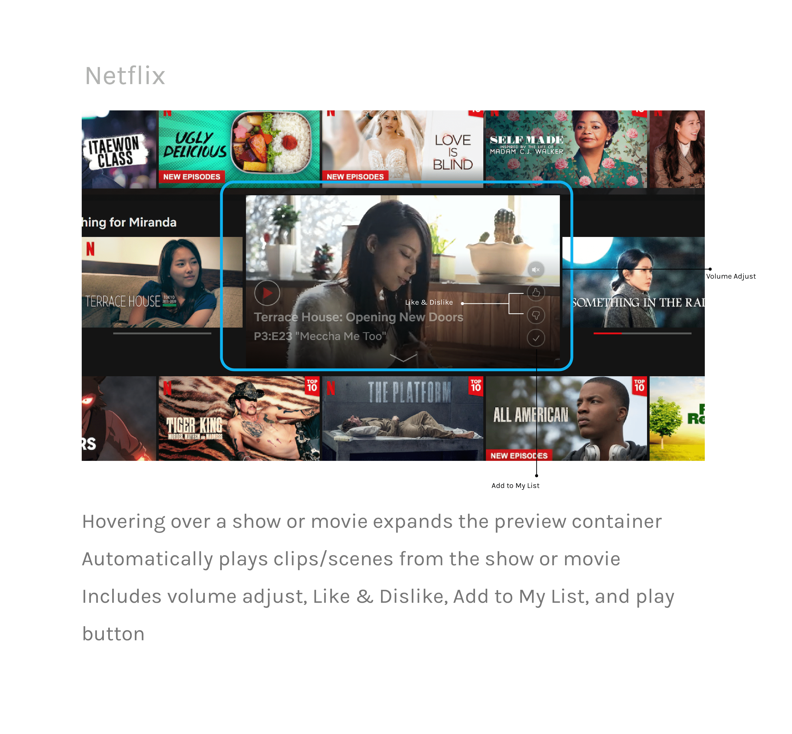
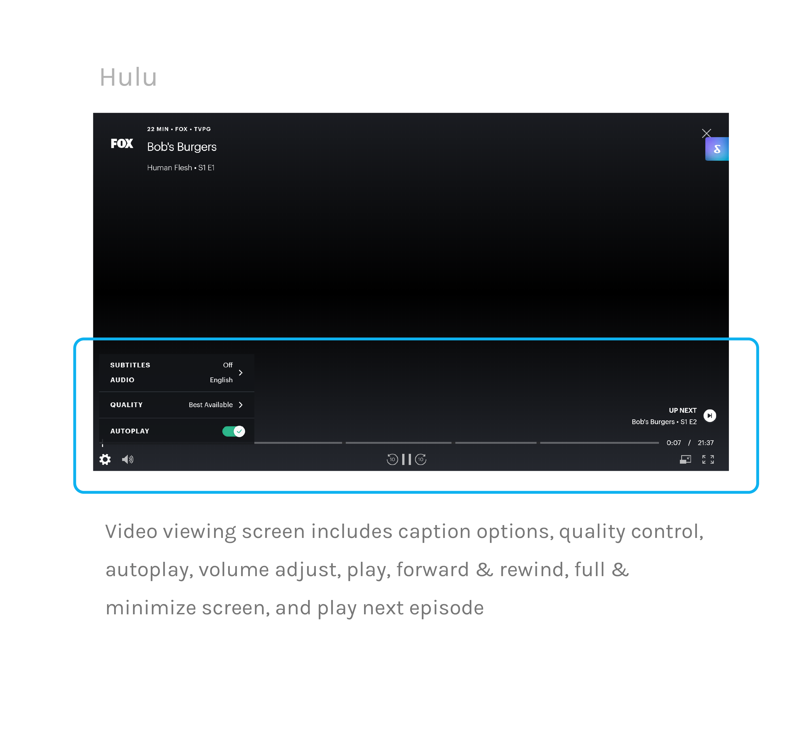
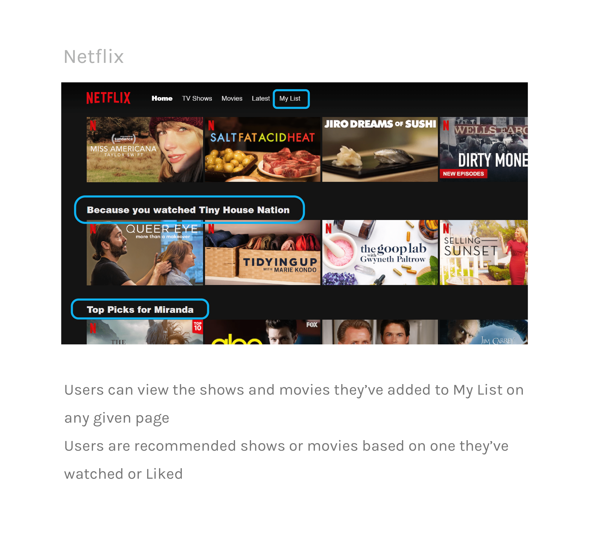

Project Elements
Duration üïê
February – March 2020 (2 weeks)
Tools ✒️
Figma, Adobe Illustrator
Team üôã‚Äç
Individual (Personal case study)
01. Project Overview
Background
The American premium television network, HBO offers a variety
of television series, documentaries, sports, movies, and more. HBO Go is an extension of their network,
allowing customers with a paid subscription to stream HBO content on demand from anywhere.
Current Web Design

Objective
The current web and mobile designs feel impersonal and are overly simple, creating a
mediocre and uninspiring experience for customers. It is also lacking in essential features,
such as a resume series playback or watch next button, thus making it frustrating for customers
to indulge in any content on the platform. The purpose of this project
is to redesign the web interface to make it easier and more engaging to watch content on HBO Go.
02. User Research
User Interviews
Because HBO has a diverse audience, I decided to conduct interviews with people in my immediate network,
but also use the HBO Go reviews customers have left to guide my redesign.
To gain meaningful insight on the needs and priorities of my audience, I asked a series of questions while users interacted with the current website.

To gain meaningful insight on the needs and priorities of my audience, I asked a series of questions while users interacted with the current website.
How do you decide what to watch when you’re browsing?
What, if anything, caused you frustration using this platform?
Is HBO your first choice to consume media content? If not, what makes you gravitate
toward your preferred platform?
How might you improve its design and usability?
Competitive Analysis
Because all those I interviewed referenced HBO competitors, I decided to analyze what they were doing to engage users that HBO Go might lack.
I focused on two leading competitors, Hulu and Netflix. These series of comparisons will guide me in determining where HGO Go falls short, how they
can rise up to market standards, and what they can do to differentiate itself from its competitors.
Navigation

Previews & trailers




Content layout


Video Playback


Individual Preferences


Primary Concerns
After collecting these interview responses and examining competing platforms, I was able to reduce these insights down into three primary concerns that my redesign
of HBO Go will tackle.
○  Lack of individualized content
There is an absence of personalized content curation (i.e. recommendations), thus creating a sense of distance
Feels like a one-time use platform
○  The interface is uninviting and unmemorable
The layout of content is exactly the same throughout the entire page, which feels unexciting
and causes viewers to quickly scroll through without wanting to explore
○ Little to no assistance in guiding and informing users
Users are forced to hunt for their desired content because of the lack of content descriptions,
play next buttons, and other essential features that make for an easy watching experience
There's a lack of previews/trailers that would interest the users
03. Ideation
Sketches
04. Prototyping
Wireframes

Iterating & User Testing
User Testing Results
High-Fidelty Prototype


05. Reflection
Lessons & Takeaways